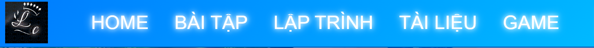
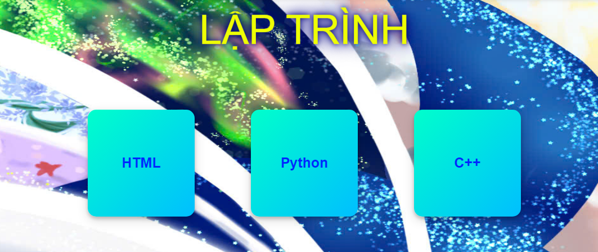
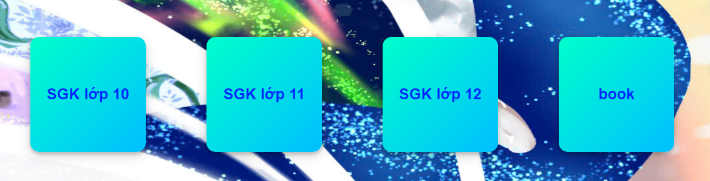
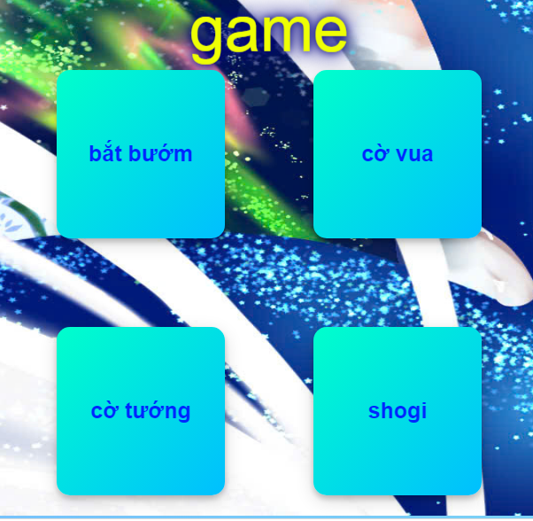

Bài giới thiệu:
Với sự thay đổi của kì thi THPT Quốc gia, việc học sinh tự học đang ngày càng được nâng cao với tình trạng đó nên em và các bạn đã cùng nhau xây dựng lên một trang web để học sinh và cả giáo viên có thể linh hoạt hơn trong việc giao bài tập và làm bài.
LOGO
Thông tin nổi bật:
- -Sau khi vào trang web, người chơi sẽ có những phần học tập, sách, và còn có những phần trò chơi để học sinh có thể giải trí sau mỗi lần học tập.
 - -Ở phần home, trang web sẽ đưa các thông tin nổi bật và hướng dẫn sử dụng.
- -Phần bài tập sẽ là phần chính để người chơi có thể làm bài tập và cũng cố thêm kiến thức.

- -Tiếp theo đó sẽ là phần lập trình, nơi mà học sinh có thể thực hành ngay trên trang web, phần này cũng có thể được thực hiện trong chương trình tin học của các khối.
 - -Phần tự học của học sinh sẽ là phần “tài liệu”, học sinh có thể truy cập để học hỏi trong các cuốn sách đó, sau mỗi tháng sẽ có một phần sách mới được cập nhật tại nút “book”
 - -Ở phần trò chơi, học sinh có thể giải tỏa được những mệt mỏi có trong buổi học, có những trò chơi giải trí, cũng có những trò chơi mang tính suy luận khác nhau.
 - -Phần cuối cùng sẽ là phần tính điểm, các học sinh có thể cạnh tranh để có thứ hạng cao trong trang web. Trong tương lai chúng em sẽ đưa trang web này thành trang web để học sinh có thể biết được thứ hạng học tập của mình trong trường.